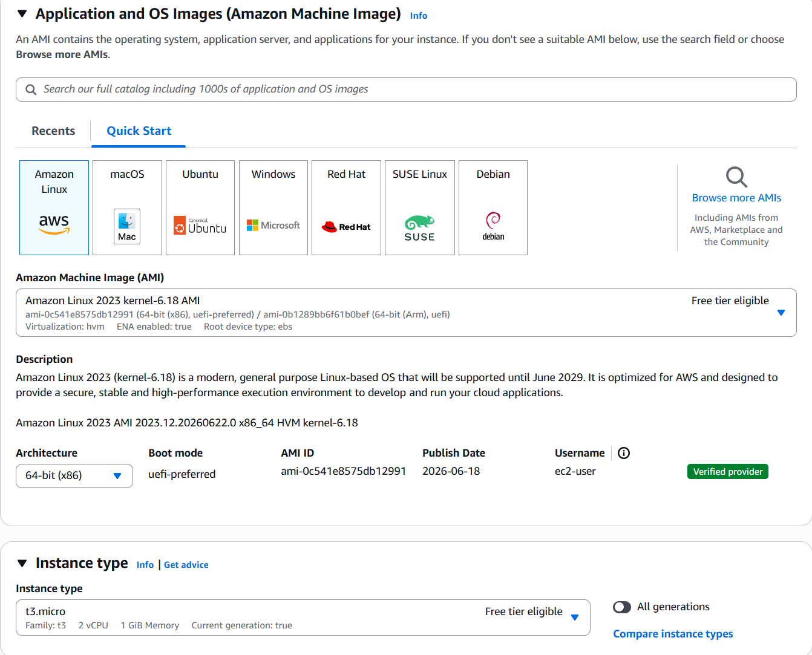
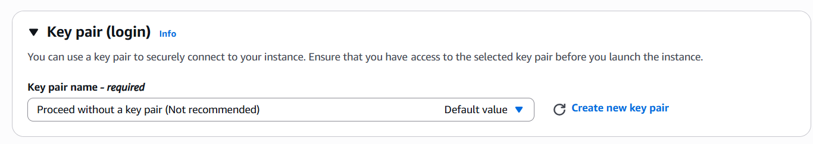
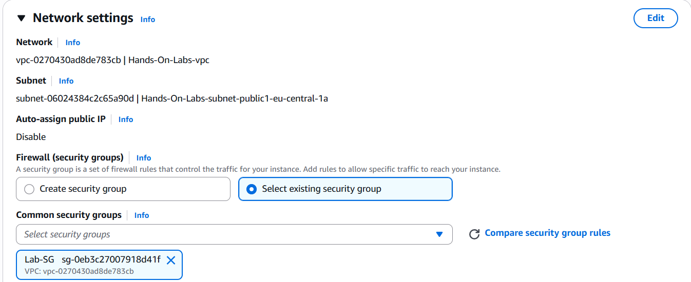
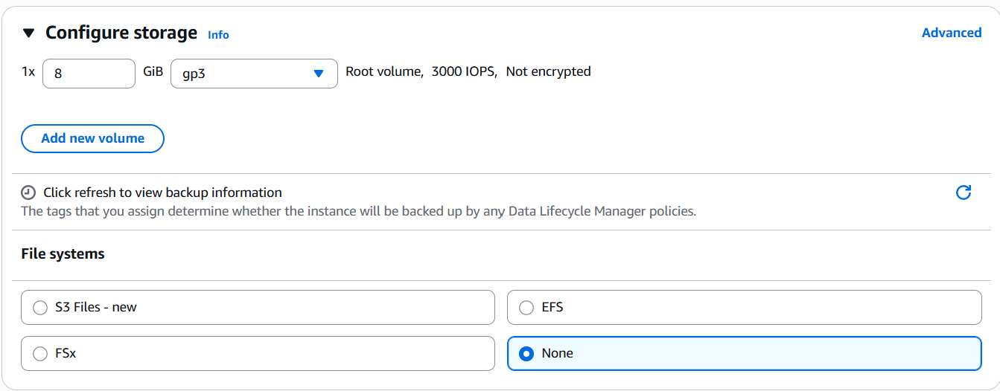
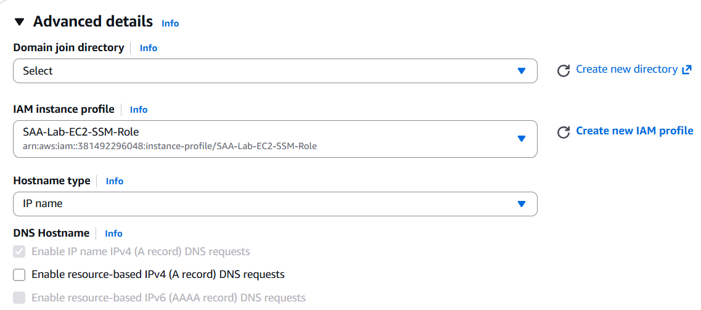
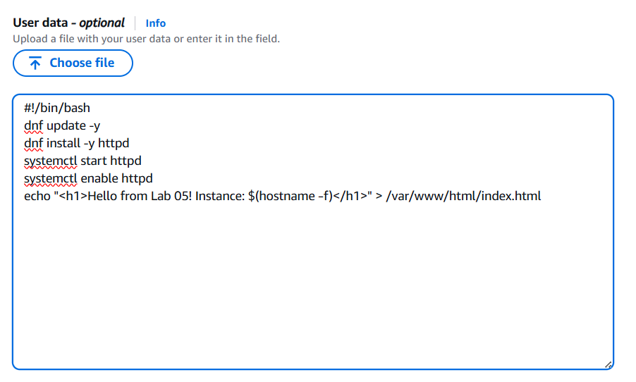

Launch a secure EC2 instance with no SSH access — no key pair, no port 22 open. You will access the instance through AWS Systems Manager Session Manager, which routes traffic through AWS's secure control plane rather than the public network. Apache web server is installed automatically via User Data. This lab demonstrates the modern enterprise baseline for compute access control, mapping to SAA Domain 1 (Design Secure Architectures).
SAA-Lab-EC2-SSM-Role with AmazonSSMManagedInstanceCore attachedLab-SG security group (HTTP 80 + HTTPS 443 inbound, HTTPS 443 outbound)<firstname>-<lastname>-labjohn-doe-lab



SAA-Lab-EC2-SSM-Role
#!/bin/bash dnf update -y dnf install -y httpd systemctl start httpd systemctl enable httpd echo "<h1>Hello from Lab 05! Ben is the best instructor 😊 Instance: $(hostname -f)</h1>" > /var/www/html/index.html

curl http://localhostYou should see:
<h1>Hello from Lab 05! Instance: ip-x-x-x-x.eu-central-1.compute.internal</h1>systemctl status httpd
http://<your-public-ip>You should see the same Apache page served publicly — over HTTP, with no SSH or interactive access exposed.
curl http://localhost returns the Apache HTML page from inside the instancehttp://<public-ip> loads the Apache page in the browser — HTTP (80) only, no SSH (22) or RDP (3389)Lab-SGSAA-Lab-EC2-SSM-Role